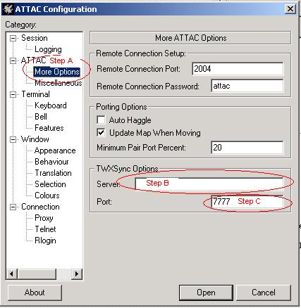
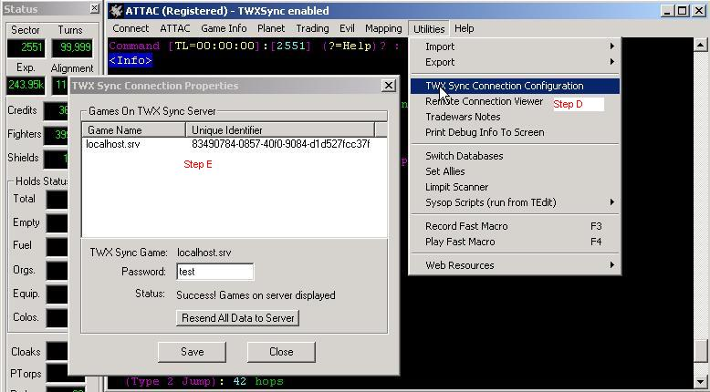

|
|
How do i connect to the TWXSync server ?
Open ATTAC. (Or click ATTAC->Options from when already using ATTAC) You see the following screen

Step A: First click on the ATTAC->More options
Step B: Enter the TWXSync Server name. This can either be server address (ex: myserver.com) or the IP Address (ex: 111.111.111.111)
Step C: Enter the Port to use. The default TWXSync port is 7777
After ATTAC is started.: You need to set ATTAC to "Sync" with the proper game on the server.

Step D: Click Utilities->TWXSync Configuration
Step E: Select a game, enter the password and click Save then Close. Restart ATTAC
Note: At this point, your connection to the TWXSync server is completely automated. When you start ATTAC, it will automatically connect if the TWXSync server is online.
|